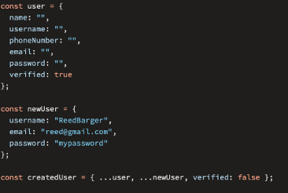

Arrays
Arrays
Los arrays son listas ordenadas de elementos.
Se declara con = []
Ejemplo:
const frutas = ["manzana", "plátano", "naranja"];
frutas.push("uva");
console.log(frutas); // ["manzana", "plátano", "naranja", "uva"]
Iteración
Podemos recorrer objetos y arrays con bucles.
Ejemplo:
const frutas = ["manzana", "plátano", "naranja"];
for (let i = 0; i < frutas.length; i++) {
console.log(frutas[i]);
}
Métodos de Arrays
Los arrays tienen métodos útiles para manipular datos.
Ejemplo:
const frutas = ["manzana", "plátano", "naranja"];
frutas.push("uva");
frutas.pop();
console.log(frutas); // ["manzana", "plátano", "naranja"]
Iteración con forEach
El método forEach ejecuta una función por cada
elemento de un array.
Ejemplo:
const frutas = ["manzana", "plátano", "naranja"];
frutas.forEach(fruta => console.log(fruta));
Iteración con map
El método map crea un nuevo array con los resultados
de la función.
Ejemplo:
const numeros = [1, 2, 3];
const dobles = numeros.map(numero => numero * 2);
console.log(dobles); // [2, 4, 6]
Iteración con filter
El método filter crea un nuevo array con los
elementos que pasan la prueba.
Ejemplo:
const numeros = [1, 2, 3, 4, 5];
const pares = numeros.filter(numero => numero % 2 === 0);
console.log(pares); // [2, 4]
Objetos
Objetos
Los objetos almacenan pares clave-valor.
Ejemplo:
const usuario = {
nombre: "Ana",
edad: 30,
profesion: "Ingeniera"
};
console.log(usuario.nombre); // "Ana"
Destructuring
El destructuring es una forma de extraer datos de objetos y arrays.
Ejemplo:
const usuario = {
nombre: "Ana",
edad: 30,
profesion: "Ingeniera"
};
const { nombre, edad } = usuario;
console.log(nombre); // "Ana"
console.log(edad); // 30
Object Spread
El object spread es una forma de combinar objetos.
Ejemplo:
const usuario = {
nombre: "Ana",
edad: 30,
profesion: "Ingeniera"
};
const usuario2 = { ...usuario, ciudad: "Lima" };
console.log(usuario2); // { nombre: "Ana", edad: 30, profesion: "Ingeniera", ciudad: "Lima" }
Funciones
Funciones
- Las funciones son bloques de código reutilizables que realizan una acción.
- Podemos pasar argumentos a las funciones.
- Podemos retornar valores de las funciones.
Ejemplo:
function saludar(nombre) {
return `¡Hola, ${nombre}!`;
}
console.log(saludar("Juan")); // "¡Hola, Juan!"
function sumar(a, b) {
return a + b;
}
console.log(sumar(2, 3)); // 5
Arrow Functions
- Las arrow functions son una forma más corta de escribir funciones.
- Permite realizar multiline, permitiendo hacer la ejecución de múltiple expresiones.
Ejemplo:
const saludar = nombre => `¡Hola, ${nombre}!`;
console.log(saludar("Juan")); // "¡Hola, Juan!"
const sumar = (a, b) => a + b;
console.log(sumar(2, 3)); // 5
múltiple expresiones:
let sumar = (a, b) => {
let result a + b;
return result;
};
console.log(sumar(2, 3)); // 5
Scope
- El scope es el alcance de una variable.
- Las variables pueden ser globales o locales.
- Las variables locales solo son accesibles dentro de la función.
- Las variables globales son accesibles en cualquier parte del código.
- Las variables globales pueden ser modificadas desde cualquier parte del código.
Ejemplo:
let nombre = "Juan"; // global
function saludar() {
let mensaje = "¡Hola, " + nombre + "!"; // local
return mensaje;
}
console.log(saludar()); // "¡Hola, Juan!"
function despedir() {
let nombre = "Ana"
return "¡Adiós, " + nombre + "!";
}
console.log(despedir()); // "¡Adiós, Ana!"
Callbacks
- Un callback es una función que se pasa como argumento.
- Se ejecuta después de que otra función haya terminado.
Ejemplo:
function saludar(nombre, callback) {
return callback(nombre);
}
console.log(saludar("Juan", nombre => `¡Hola, ${nombre}!`));
Clases
Clases
- Las clases son plantillas para crear objetos.
- Las clases tienen propiedades y métodos.
-
Las clases se definen con la palabra clave
class. -
Las clases se instancian con la palabra clave
new. - Las clases pueden heredar de otras clases.
- Las clases pueden tener un constructor.
- Las clases pueden tener métodos.
Ejemplo:
class Producto {
constructor(nombre, precio) {
this.nombre = nombre;
this.precio = precio;
}
mostrarInfo() {
return `${this.nombre} cuesta $${this.precio}`;
}
}
const producto = new Producto("Laptop", 1500);
console.log(producto.mostrarInfo());
HTTP Requests
Podemos realizar peticiones HTTP con `fetch`.
Fetch es una API moderna para realizar peticiones HTTP.
Más información sobre FetchEjemplo:
fetch("https://jsonplaceholder.typicode.com/posts")
.then(response => response.json())
.then(data => console.log(data));

Asincronía
JavaScript es un lenguaje de programación asíncrono, lo que significa que puede realizar múltiples tareas al mismo tiempo.
Las tareas asíncronas se realizan en segundo plano y no bloquean el hilo principal.
Ejemplo:
setTimeout(() => {
console.log("¡Hola, JavaScript!");
}, 2000);
Promesas
Las promesas son objetos que representan el resultado de una operación asíncrona.
Las promesas pueden estar en uno de tres estados: pendiente, resuelta o rechazada.
Ejemplo:
const promesa = new Promise((resolve, reject) => {
setTimeout(() => {
resolve("¡Promesa resuelta!");
}, 2000);
});
promesa.then(data => console.log(data));
Async/Await
Async/Await es una forma más moderna de trabajar con promesas.
Async/Await nos permite escribir código asíncrono de forma sincrónica.
Ejemplo:
async function obtenerPosts() {
const response = await fetch("https://jsonplaceholder.typicode.com/posts");
const data = await response.json();
console.log(data);
}
obtenerPosts();